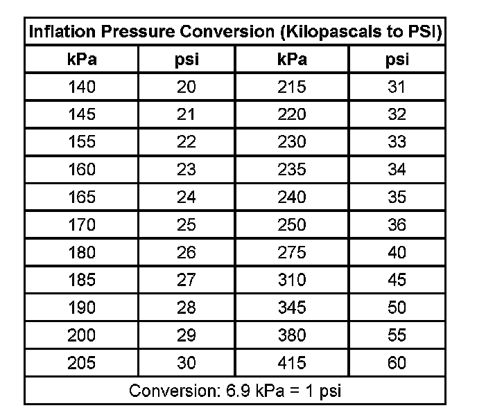

Tire Inflation Description
Tire Inflation Description
When you inflate the tires to the recommended inflation pressures, the factory-installed wheels and tires are designed in order to handle loads to the tire's rated load capacity. Incorrect tire pressures, or under-inflated tires, can cause the following conditions:
^ Vehicle handling concerns
^ Poor fuel economy
^ Shortened tire life
^ Tire overloading
Inspect the tire pressure when the following conditions apply:
^ The vehicle has been sitting at least 3 hours.
^ The vehicle has not been driven for more than 1.6 km (1 mi).
^ The tires are cool.
Inspect the tires monthly or before any extended trip. Adjust the tire pressure to the specifications on the tire label. Install the valve caps or the extensions on the valves. The caps or the extensions keep out dust and water.
The kilopascal (kPa) is the metric term for pressure. The tire pressure may be printed in both kilopascal (kPa) and psi. One psi equals 6.9 kPa.

Tires with a higher than recommended pressure can cause the following conditions:
^ A hard ride
^ Tire bruising
^ Rapid tread wear at the center of the tire
Tires with a lower than recommended pressure can cause the following conditions:
^ A tire squeal on turns
^ Hard steering
^ Rapid wear and uneven wear on the edge of the tread
^ Tire rim bruises and tire rim rupture
^ Tire cord breakage
^ High tire temperatures
^ Reduced vehicle handling
^ High fuel consumption
^ Soft riding
Unequal pressure on the same axle can cause the following conditions:
^ Uneven braking
^ Steering lead
^ Reduced vehicle handling
Refer to the Tire Placard for specific tire and wheel applications and tire pressures.